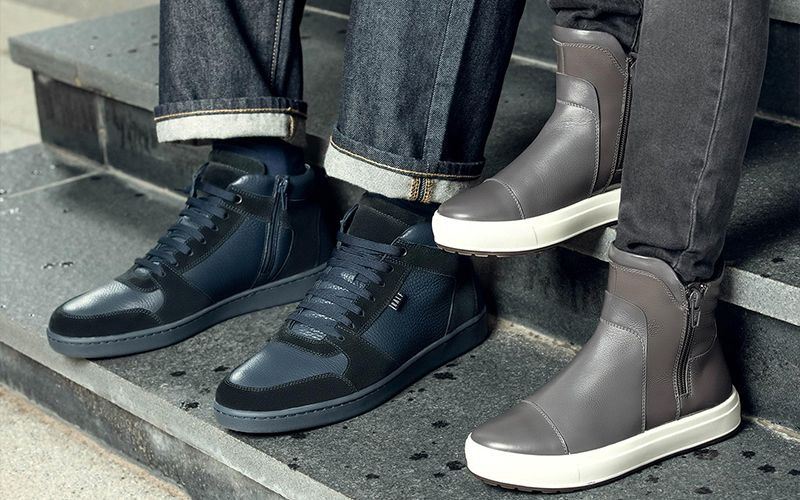

Лучшие обувные магазины: Ralf Ringer
Приобрести обувь для увлекательных путешествий, приятных прогулок, а также деловых встреч и незабываемых свиданий можно в интернет-магазине Ralf Ringer. Огромный ассортимент брендовой обуви способен закрыть потребность в подборе подходящей «пары» на любой случай.
На сайте Ralf Ringer можно найти обувь для всей семьи – для женщин, мужчин и детей. Каждая вкладка оснащена удобным каталогом, где можно выбрать любой тип обуви: от туфель, мокасин и босоножек, до ботинок, сапог и кроссовок. Помимо этого, каждый раздел оснащён функцией подробной сортировки товаров. Выбрав модель, цену, размер, цвет, коллекцию, материал изготовления, полноту ноги и другие параметры, можно легко подобрать обувь, максимально соответствующую ожиданиям.
Под каждой моделью обуви есть подробное описание, размерная таблица, количество бонусных баллов за покупку, размер скидки (при наличии) и отзывы покупателей. Кроме того, можно сразу зарезервировать понравившуюся пару в ближайшем магазине для самовывоза. Для этого достаточно выбрать его из списка.
Приобрести обувь со скидками можно во вкладке «Распродажа». Она есть в каждой категории интернет-магазина. Узнать обо всех актуальных выгодных предложениях компании можно в разделе сайта «Акции».
Доставка заказов от Ralf Ringer возможна несколькими способами: курьером, в пункты самовывоза, в постаматы PickPoint и Почтой России. Стоимость рассчитывается при оформлении заказа. Для жителей Москвы возможна доставка «День-в-день» при оформлении заказа с 00:00 до 13:00 часов.
Оплата может производится наличными, банковской картой, через сервисы Google-Pay и Apple-Pay, а также картой «Халва».